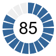
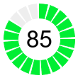
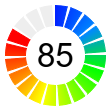
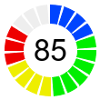
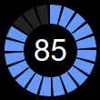
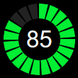
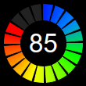
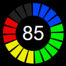

This example demonstrates circular bar meters in segmented style.
This example is similar to the
Circular Bar Meter example except that the ring sectors are segmented.
The following is the command line version of the code in "cppdemo/circularbarmeter2". The MFC version of the code is in "mfcdemo/mfcdemo". The Qt Widgets version of the code is in "qtdemo/qtdemo". The QML/Qt Quick version of the code is in "qmldemo/qmldemo".
#include "chartdir.h"
void createChart(int chartIndex, const char *filename)
{
// The value to display on the meter
double value = 85;
// The meter radius and angle
int radius = 50;
double angle = value * 360.0 / 100;
// Create an AngularMeter with transparent background
AngularMeter* m = new AngularMeter(radius * 2 + 10, radius * 2 + 10, Chart::Transparent);
// Set the center, radius and angular range of the meter
m->setMeter(m->getWidth() / 2, m->getHeight() / 2, radius, 0, 360);
// For circular bar meters, we do not need pointer or graduation, so we hide them.
m->setMeterColors(Chart::Transparent, Chart::Transparent, Chart::Transparent);
m->setCap(0, Chart::Transparent);
// In this example, the circular bar has 20 segments
int segmentCount = 20;
// The angular step
double angleStep = 360.0 / segmentCount;
// The gap between segments is 4.5 degrees
double angleGap = 4.5;
//
// This example demonstrates several coloring styles
//
// Thd default fill and blank colors
int fillColor = 0x336699;
int blankColor = 0xeeeeee;
if (chartIndex >= 4) {
// Use dark background style
m->setColors(Chart::whiteOnBlackPalette);
fillColor = 0x6699ff;
blankColor = 0x222222;
}
if (chartIndex % 4 == 1) {
// Alternative fill color
fillColor = 0x00ee33;
} else if (chartIndex % 4 == 2) {
// Use a smooth color scale as the fill color
int smoothColorScale[] = {0, 0x0022ff, 15, 0x0088ff, 30, 0x00ff00, 55, 0xffff00, 80,
0xff0000, 100, 0xff0000};
const int smoothColorScale_size = (int)(sizeof(smoothColorScale)/sizeof(*smoothColorScale));
fillColor = m->getDrawArea()->angleGradientColor(m->getWidth() / 2, m->getHeight() / 2, 0,
360, radius, radius - 20, IntArray(smoothColorScale, smoothColorScale_size));
} else if (chartIndex % 4 == 3) {
// Use a step color scale as the fill color
int stepColorScale[] = {0, 0x0044ff, 20, 0x00ee00, 50, 0xeeee00, 70, 0xee0000, 100};
const int stepColorScale_size = (int)(sizeof(stepColorScale)/sizeof(*stepColorScale));
fillColor = m->getDrawArea()->angleGradientColor(m->getWidth() / 2, m->getHeight() / 2,
-angleGap / 2, 360 - angleGap / 2, radius, radius - 20, IntArray(stepColorScale,
stepColorScale_size));
}
//
// Now we draw the segments of the bar meter
//
// The segment that contains the value
int currentSegment = (int)(angle / angleStep);
// Segments after the current segment is colored with the blank color
for(int i = currentSegment + 1; i < segmentCount; ++i) {
m->addRingSector(radius, radius - 20, i * angleStep, (i + 1) * angleStep - angleGap,
blankColor);
}
// Segments before the current segment is colored with the fill color
for(int i = 0; i < currentSegment; ++i) {
m->addRingSector(radius, radius - 20, i * angleStep, (i + 1) * angleStep - angleGap,
fillColor);
}
// Segment that contains the angle will be partially filled and partially blank. We need to
// adjust the angle to compensated for the angle gap.
double adjustedAngle = currentSegment * angleStep + (angle - currentSegment * angleStep) * (1 -
angleGap / angleStep);
// The blank part of the segment
if ((currentSegment + 1) * angleStep > angle) {
m->addRingSector(radius, radius - 20, adjustedAngle, (currentSegment + 1) * angleStep -
angleGap, blankColor);
}
// The filled part of the segment.
if (angle > currentSegment * angleStep) {
m->addRingSector(radius, radius - 20, currentSegment * angleStep, adjustedAngle, fillColor);
}
// Add a label at the center to display the value
m->addText(m->getWidth() / 2, m->getHeight() / 2, m->formatValue(value, "{value}"), "Arial", 25,
Chart::TextColor, Chart::Center)->setMargin(0);
// Output the chart
m->makeChart(filename);
//free up resources
delete m;
}
int main(int argc, char *argv[])
{
createChart(0, "circularbarmeter20.png");
createChart(1, "circularbarmeter21.png");
createChart(2, "circularbarmeter22.png");
createChart(3, "circularbarmeter23.png");
createChart(4, "circularbarmeter24.png");
createChart(5, "circularbarmeter25.png");
createChart(6, "circularbarmeter26.png");
createChart(7, "circularbarmeter27.png");
return 0;
}
© 2023 Advanced Software Engineering Limited. All rights reserved.